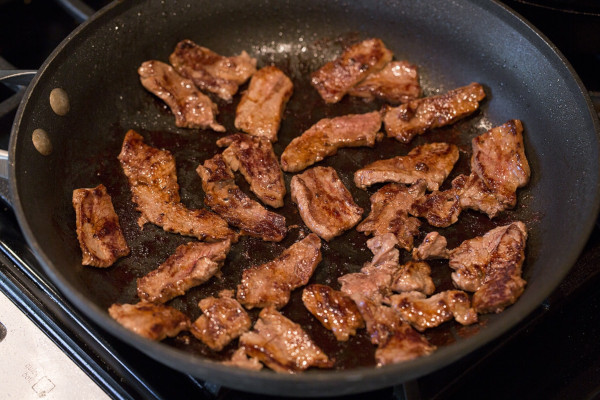

Sandwich | The True Recipe

Description
Sliced meat fried in pan
Ingridients:
- defrosted meat
- 1/2 tbsp salt
- vegetable oil
Steps:
- Cover the bottom of your frying pan with vegetable oil
- Put the meat in the frying pan
- Fry on medium heat until it looks nice and browny